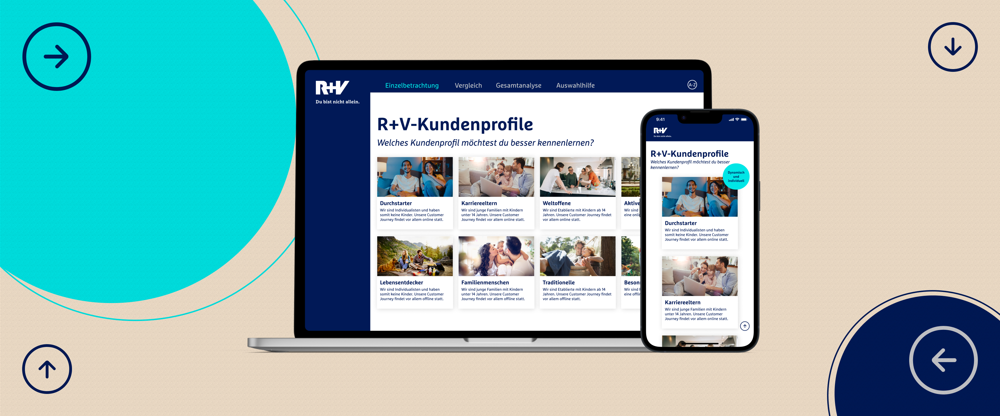

Dynamische kundenprofile

Project overview
Main links
WORK IN PROGRESS
In 2024, I worked on a web application project called Dynamische Kundenprofile for R+V, one of the largest insurance companies in Germany. The goal of this tool was to help R+V’s marketing employees visualise and compare customer group profiles dynamically in a way so the users could display data for up to eight profiles simultaneously or compare them in pairs to identify trends, differences, and similarities.
The overall concept was developed by colleagues from my team. My main contribution was the UI design, iterating on different visual approaches, presenting design options, data visualisation opportunities, and refining them based on feedback until we reached a solution that satisfied the client.
Throughout the project, I collaborated closely with the team, participated in daily stand-ups and weekly reviews, and ensured alignment with R+V’s brand guidelines.